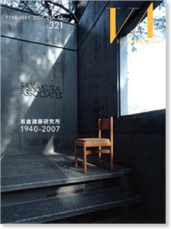

当サイトはJavaScriptをonにしてご覧ください。

FEBRUARY 2007 VOL.43 321
坂倉建築研究所1940-2007
定価 3,300円（税込）
ISBN 978-4-901772-31-0
都市の日常風景をつくる ― 坂倉準三と坂倉建築研究所の仕事
松隈 洋
偉大なるボス坂倉準三
藤木忠善
小田急成城学園前駅ビル
新宿駅西口広場・地下駐車場
新宿駅西口ビル・小田急百貨店
小田急新宿コンコースリニューアル
小田急サザンタワー・新宿サザンテラス
アーバンビューグランドタワー
JRセントラルタワーズ
明石町複合施設
西宮マリナパークシティ
「坂倉準三氏と30分」で想うこと
清田育男
青山ザ・タワー
グランドメゾン センター北
ルネ・ブランシュ横浜海岸通り
アーバンビュー岡本
新百合ヶ丘レガートプレイス
グランドメゾン白壁櫻明荘
オーキッドコート
FOREST南平台
アーバンスタイル六本木三河台
東京ミッドタウン ガーデンサイド
今こそ坂倉準三先生の心を
山崎 泰孝
菊池寛実記念 智美術館
三重県立美術館増改築
川越市立美術館
地底の森ミュージアム 仙台市富沢遺跡保存館
成城幼稚園
静岡文化芸術大学
岐阜県立看護大学
東京大学大学院 新領域創成科学研究科基盤科学系研究棟
所沢市民体育館
国立オリンピック記念青少年総合センター
小田原市総合文化体育館・小田原アリーナ
東大和市民ホール
かずさアカデミアホール
桐生市市民文化会館
つくば国際会議場
元の鞘に納まった建築研究所
竹村真一郎
大阪市中央公会堂（保存・再生）
東京国立近代美術館本館増改築
立教大学 第1食堂増改築
横浜人形の家
芦屋市民センター
聖イグナチオ教会
鹿児島カテドラル ザビエル記念聖堂
古江中央霊園
東京サレジオ学園
サレジアン・アスピランテート
坂倉先生への思い
戸尾任宏
桜庵
アリスヴィラリゾート
南津軽 錦水
エバーグリーンマリノア ホテル
倶楽部我山クラブハウス
メイフラワーゴルフクラブ（旧）
クラブハウス＆桜庵イン
東急南大井ビル
汐留プラザビル
エバーグリーンマリノア アミューズ棟
はせがわ銀座本店
坂倉準三と家具
北村脩一
椅子の系譜
アーバンビューグランドタワー ゲストルーム
小田急成城学園前駅ビル
レストラン バンブー
小田急サザンタワー
南青山の家
銀座天一 日本橋店
スーツァンレストラン 陳 広島店
銀座天一 広島店
東京共同会計事務所
はせがわ銀座本店
華雲
西麻布 味やま
マンジャペッシェ
作品の系譜
全作品リスト
熱意の継承
坂倉竹之助
歴代在籍者
建築概要
会社概要
奥付
連載 ていじ手帳 その十「伝兵衛さん（1）」 伊藤ていじ
VA Information